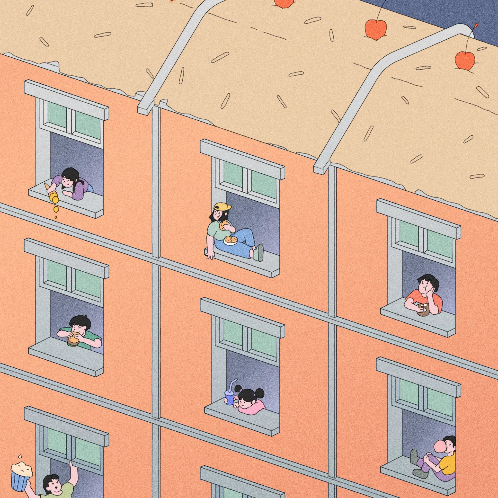
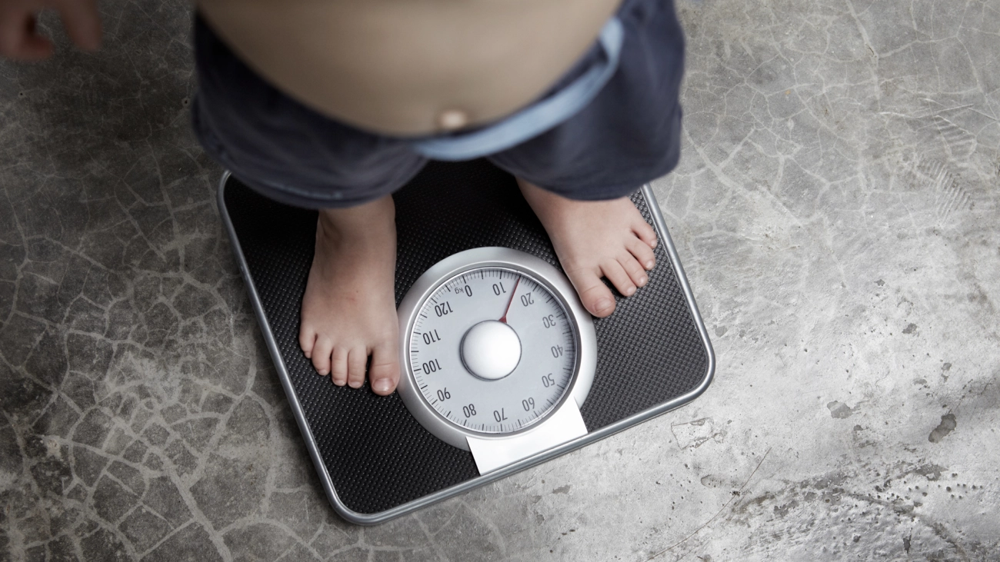
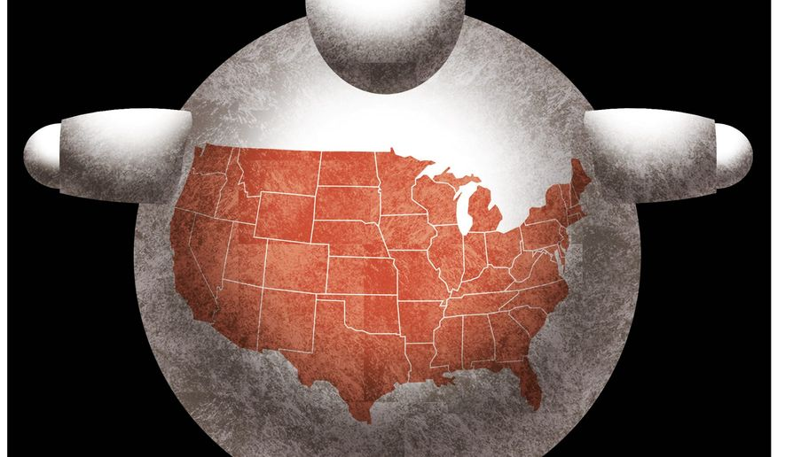

How Media Views the Issue
I examined three different media sources: a mainstream article, a left-leaning article, and a right-leaning article.
Mainstream Media
The author of the New York Times article "The Pandemic Seems to Have Worsened Childhood Obesity, but There's Hope" discusses how obesity can be caused by societal factors. Children aged 5 to 9 years old had the greatest B.M.I. increases in his study. "They're not making those personal decisions," he says. "They are influenced by their surroundings." This means that policies that improve post-pandemic access to nutritious meals and recreation can still have a positive impact on their trajectory. Schools also provide opportunities for physical activity, which are more limited for children who live in neighborhoods with few or no outdoor amenities. "You're not letting your child play in a park in downtown Baltimore, where our murder rate is so high," says Maureen Black, a psychologist and professor of pediatrics, epidemiology, and public health at the University of Maryland School of Medicine. This means that children spend more time sedentary and snacking in front of screens. A lack of school structure can also lead to irregular sleep-wake patterns, which have been linked to unhealthy weight gain.
Left-Leaning Media
The author of the Mother Jones article "Childhood Obesity Is Just Getting Worse, and This New Study May Offer Some Clues" discusses how obesity has remained stable, if not increasing, in certain groups of people. Childhood obesity rates increased from 29% to 35% during that time period, according to the researchers. From 2014 to 2016, the prevalence of severe obesity among children aged two to five years increased from 9% to 14%. Preschoolers from low-income families were twice as likely as their peers from middle-income families to be obese.
Right-Leaning Media
The author of the Washington Times article "Obesity is America's Next Pandemic" states that "obesity is the next pandemic, but public health authorities who claim to be acting in our best interests have been asleep at the wheel for far too long." Obesity has gotten out of hand. Since the outbreak, 42 percent of Americans have reported unwelcome weight gain. The situation is even worse among children, with 15.4 percent of those aged 2 to 17 expected to be obese by the end of 2020, up from 13.7 percent the previous year. These are not merely statistics. In comparison to other developed countries, the United States has a significant shortfall in life expectancy, resulting in approximately 400,000 extra deaths each year. When comparing the United States to other similarly wealthy countries, obesity is responsible for 55% of America's public health problems. And, if the United States is extremely unlucky, politicians will fight the new pandemic in the same way they did the old, with broad authoritarian bans. A strong government response to obesity hasn't worked in the past, and it won't work now.
Conclusions
Even when the sources are from opposing political parties, there are no disagreements between the three articles. Each article follows a similar format, with references to studies and statistics used to support the author's point. When making claims, the author gains credibility by using statistics. Their message is that, while childhood obesity is worsening and being exacerbated by the pandemic, it is caused by a variety of factors known and unknown to the affected individuals, not just "eating too much and moving too little." This comprehension encompasses everything that recent studies and research have demonstrated. However, based on our research, we can conclude that all of the claims in the article are correct.